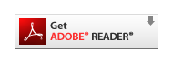

This course contains PDF files. To view these files, you must have Adobe® Reader® software on your computer.
Select this link to open a sample PDF file. If the file does not open as shown in the graphic, you will need to install the free Adobe Reader software for your browser by selecting the button below:

Note: This course may contain links to Microsoft Word files. When opening a link for a Word file, you will be prompted to save the file to your computer or device. Then you can open the file from the location you saved it.
In addition, this course also contains links to external Web-sites. Selecting a link to an external site will open a new browser or tab. Close the new browser or tab to return to the course.
Select Next to continue.
text editing options